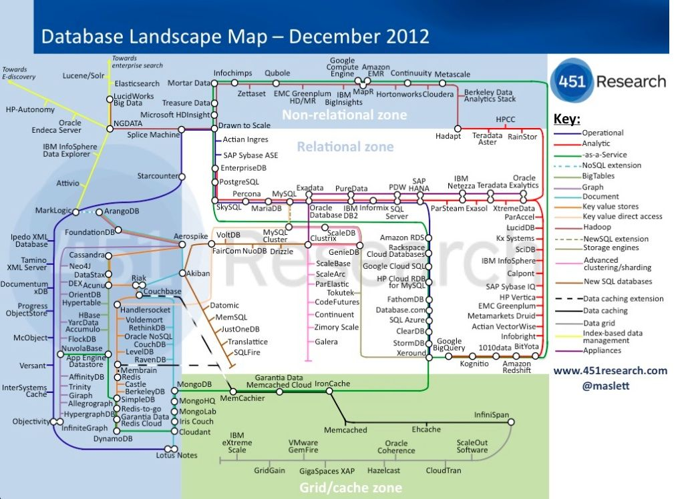

2. NoSQL: an introduction
As described in Sadalage and Fowler’s book "NoSQL Distilled", RDBMS have definitely proven their worth since the 1980s. Some of their strengths include:
-
they can store large amounts of data that are easily queryable
-
transactional mechanisms make concurrency safe: different individuals/systems can access a database at the same time and alter data without fear of corrupting that data
-
SQL: a (almost) standard query language that is supported by all database management systems
There are however shortcomings of RDBMS, which we will describe below.
2.1. Issues with relational databases
The 2000s has seen a boom in the amount of data generated and stored. There are basically two approaches to cope with this: scale up or scale out. What you do when scaling up is to just buy a bigger server on which we can run the database server. This works up to a point, but (a) there are clear limits in size, and (b) it is very expensive. In the other option, scaling out, we take multiple commodity (and therefore cheap) machines and set them up as a cluster where each of the machines has to store only part of the data. Unfortunately, RDBMS are not designed with this in mind.
2.1.1. Scalability and clusters
Querying data
Best practices in relational database design call for a normalised design (see section "Relational Database Management Systems"). This means that the different concepts in the data are separated out into tables, and can be joined together again in a query. Unfortunately, joins can be very expensive. For example, the Ensembl database (www.ensembl.org) is a fully normalised omics database, containing a total of 74 tables. For example, to get the exon positions for a given gene, one needs to run 3 joins.
(Actually: note that this ends at seq_region and not at chromosome. To get to the chromosome actually requires two more joins but those are too complex to explain in the context of this session…)
The query to get the exon positions for FAM39B protein:
SELECT e.seq_region_start
FROM gene g, transcript t, exon_transcript et, exon e
WHERE g.description = 'FAM39B protein'
AND g.gene_id = t.gene_id
AND t.transcript_id = et.transcript_id
AND et.exon_id = e.exon_id;Writing data
Suppose that you begin to store genomic mutations in a mysql database. All goes well, until you notice that the database becomes too large for the computer you are running mysql on. There are different solutions for this:
-
Buy a bigger computer (= vertical scaling) which will typically be much more expensive
-
Shard your data across different databases on different computers (= horizontal scaling): data for chromosome 1 is stored in a mysql database on computer 1, chromosome 2 is stored in a mysql database on computer 2, etc. Unfortunately, this does mean that in your application code (i.e. when you’re trying to access this data from R or python), you need to know what computer to connect to. It gets worse if you later notice that one of these other servers becomes the bottleneck. Then you’d have to get additional computers and e.g. store the first 10% of chromosome 1 on computer 1, the next 10% on computer 2, etc. Again: this makes it very complicated in your R and/or python scripts as you have to know what is stored where.
2.1.2. Impedance mismatch
When discussing relational databases, we went through the exercise of normalising our database scheme to make sure that, among other things, we minimise the emergence of inconsistencies of the data, and allow ourselves to ask the database any question. But this is actually strange, right? We first deconstruct the data that we receive into normalised tables, only to need table joins to get anything useful back out. Also, any value in the database needs to be simple, and can for example should not be stored as a nested record or a list. For example, you would not store the children of a couple like this:
| id | mother | father | children |
|---|---|---|---|
1 |
John D |
Jane D |
[Tim;Tom;Tina] |
In contrast, a normalised way of storing this could be:
individuals
| id | name |
|---|---|
1 |
John D |
2 |
Jane D |
3 |
Tim |
4 |
Tom |
5 |
Tina |
relationships
| id | individual_id1 | individual_id2 | type |
|---|---|---|---|
1 |
3 |
1 |
child_of |
2 |
4 |
1 |
child_of |
3 |
5 |
1 |
child_of |
4 |
3 |
2 |
child_of |
5 |
4 |
2 |
child_of |
6 |
5 |
2 |
child_of |
7 |
1 |
2 |
married_to |
That is called the impedance mismatch: there is a mismatch between how you think about the data, and how it needs to be stored in the relational database. The example below shows how all information that conceptually belongs to the same order is split up over multiple tables. This means that the developer needs to constantly switch between his/her mental model of the application and that of the database which can become very frustrating.
Impedance mismatch (taken from "NoSQL Distilled", Sadalage & Fowler)
2.1.3. Relational data
Here’s an extreme example of impedance mismatch. Imagine you have a social graph and the data is stored in a relational database. People have names, and know other people. Every "know" is reciprocal (so if I know you then you know me too).

Let’s see what it means to follow relationships in a RDBMS. What would this look like if we were searching for friends of James?
SELECT knowee FROM friends
WHERE knower IN (
SELECT knowee FROM friends
WHERE knower = 'James'
)
UNION
SELECT knower FROM friends
WHERE knowee IN (
SELECT knower FROM friends
WHERE knowee = 'James'
);Quite verbose. What if we’d want to go one level deeper: all friends of friends of James?
SELECT knowee FROM friends
WHERE knower IN (
SELECT knowee FROM friends
WHERE knower IN (
SELECT knowee FROM friends
WHERE knower = 'James'
)
UNION
SELECT knower FROM friends
WHERE knowee IN (
SELECT knower FROM friends
WHERE knowee = 'James'
)
)
UNION
SELECT knower FROM friends
WHERE knowee IN (
SELECT knower FROM friends
WHERE knowee IN (
SELECT knower FROM friends
WHERE knowee = 'James'
)
UNION
SELECT knowee FROM friends
WHERE knower IN (
SELECT knowee FROM friends
WHERE knower = 'James'
)
);This clearly does not scale, and we’ll have to look for another solution.
2.2. General NoSQL concepts
2.2.1. The end of SQL?
So does this mean that we should leave SQL behind? No. What we’ll be looking at is polyglot persistence: depending on what data you’re working with, some of that might still be stored in an SQL database, while other parts are stored in a document store and graph database (see below). So instead of having a single database, we can end up with a collection of databases to support a single application.
Source: Sadalage & Fowler, 2012
The figure below shows how in the hypothetical case of a retailer’s web application we might be using a combination of 8 different database technologies to store different types of information. Note that RDBMS are still part of the picture!
The term NoSQL was coined as the name and hashtag for a conference in 2009 about "open-source, distributed, non-relational databases" (source: Sadalage & Fowler, 2012). But as Sadalage & Fowler state: "there is no generally accepted definition, nor an authority to provide one". But in general, they
-
don’t use SQL
-
are often driven by the need to run on clusters or a different data model (e.g. graphs)
-
are often schema-less: you can add fields to records without having to define changes in structure first (using e.g.
ALTER TABLE)
2.2.2. General NoSQL concepts
NoSQL databases have received increasing attention in the more and more data-driven world. They allow for modelling of more complex data in a more scalable and agile way. Although it is impossible to lump all NoSQL technologies on a single heap, there are some concepts that apply.
NoSQL is not just one technology
As mentioned above, NoSQL is not just a single technology; it is more an approach than a technology. The image below shows a (new very outdated) overview of many of the database technologies used, including MongoDB, neo4j, ArangoDB, etc. But the NoSQL approach is also about storing csv-files when that makes sense.

Keep components simple
If we look at the extreme case of a legacy Oracle SQL database for clinical studies at e.g. a pharmaceutical company, we will typically see that such system is a single behemoth of a system, which requires several database managers to just keep the server(s) running and operating optimally. In contrast, in a NoSQL setup, we often try to keep the different components as simple as possible.
Separation of concerns
An important question to answer here is where to put the functionality of your application? In the last example: do you let the database compute (with e.g. SQL statements) the things you need in the graphical interface directly? Do you let the graphical user interface get the raw data from the database and do all the necessary munging of that data at the user end? Or do you insert a separate layer in between (i.e. the computational layer mentioned above)? It’s all about a separation of concerns.
In general, RDBMS have been around for a long time and are very mature. As a result, a lot of functionality has been added to the database tier. In applications using NoSQL solutions, however, much of the application functionality is in a middle tier.
Thinking strategically about RAM, SSD and disk
To make sure that the performance of your application is adequate for your purpose, you have to think about where to store your data. Data can be kept in RAM, on a solid-state drive (SSD), the hard disk in your computer, or in a file somewhere on the network. This choice has an immense effect on performance. It’s easy to visualise this: consider that you are in Hasselt
-
getting something from RAM = getting it from your backyard
-
getting something from SSD = getting it from somewhere in your neighbourhood
-
getting something from disk = traveling to Saudi Arabia to get it
-
getting something over the network = traveling to Jupiter to get it
It might be clear to you that cleverly keeping things in RAM is a good way to speed up your application or analysis :-) Which brings us to the next point:
Keep your cache current using consistent hashing
So keeping things in RAM makes it possible to very quickly access them. This is what you do when you load data into a variable in your python/R/SAS/ruby/perl/… code.
Caching is used constantly by the computer you’re using at this moment as well.
An important aspect of caching is calculating a key that can be used to retrieve the data (remember key/value stores?). This can for example be done by calculating a checksum, which looks at each byte of a document and returns a long sequence of letters and numbers. Different algorithms exists for this, such as MD5 or SHA-1. Changing a single bit in a file (this file can be binary or not) will completely change the checksum.
Let’s for example look at the checksum for the file that I’m writing right now. Here are the commands and output to get the MD5 and SHA-1 checksums for this file:
janaerts$ md5 2019-10-31-lambda-architecture.md
MD5 (2019-10-31-lambda-architecture.md) = a271e75efb769d5c47a6f2d040e811f4
janaerts$ shasum 2019-10-31-lambda-architecture.md
2ae358f1ac32cb9ce2081b54efc27dcc83b8c945 2019-10-31-lambda-architecture.mdAs you can see, these are quite long strings and MD5 and SHA-1 are indeed two different algorithms to create a checksum. The moment that I wrote the “A” (of “As you can see”) at the beginning of this paragraph, the checksum changed completely. Actually, below are the checksums after adding that single “A”. Clearly, the checksums are completely different.
janaerts$ md5 2019-10-31-lambda-architecture.md
MD5 (2019-10-31-lambda-architecture.md) = b597d18879c46c8838ad2085d2c7d2f9
janaerts$ shasum 2019-10-31-lambda-architecture.md
45c5a96dd506b884866e00ba9227080a1afd6afc 2019-10-31-lambda-architecture.mdThis consistent hashing can for example also be used to assign documents to specific database nodes.
In principle, it is possible that 2 different documents have the same hash value. This is called hash collision. Don’t worry about it too much, though. The MD5 algorithm generates a 128 bit string, which occurs once every 10^38 documents. If you generate a billion documents per second it would take 10 trillion times the age of the universe for a single accidental collision to occur…
Of course a group of researchers at Google tried to break this, and [they were actually successful](https://shattered.it/) on February 23th 2017.
To give you an idea of how difficult this is:
-
it had taken them 2 years of research
-
they performed 9,223,372,036,854,775,808 (9 quintillion) compressions
-
they used 6,500 years of CPU computation time for phase 1
-
they used 110 years of CPU computation time for phase 2
ACID vs BASE
ACID
RDBMS systems try to follow the ACID model for reliable database transactions. ACID stands for atomicity, consistency, isolation and durability. The prototypical example of a database that needs to comply to the ACID rules is one which handles bank transactions.

-
Atomicity: Exchange of funds in example must happen as an all-or-nothing transaction
-
Consistency: Your database should never generate a report that shows a withdrawal from saving without the corresponding addition to the checking account. In other words: all reporting needs to be blocked during atomic operations.
-
Isolation: Each part of the transaction occurs without knowledge of any other transaction
-
Durability: Once all aspects of transaction are complete, it’s permanent.
For a bank transaction it is crucial that either all processes (withdraw and deposit) are performed or none.
The software to handle these rules is very complex. In some cases, 50-60% of the codebase for a database can be spent on enforcement of these rules. For this reason, newer databases often do not support database-level transaction management in their first release.
As a ground rule, you can consider ACID pessimistic systems that focus on consistency and integrity of data above all other considerations (e.g. temporarily blocking reporting mechanisms is a reasonable compromise to ensure systems return reliable and accurate information).
BASE
BASE stands for:
-
Basic Availability: Information and service capability are “basically available” (e.g. you can always generate a report).
-
Soft-state: Some inaccuracy is temporarily allowed and data may change while being used to reduce the amount of consumed resources.
-
Eventual consistency: Eventually, when all service logic is executed, the systems is left in a consistent state. A good example of a BASE-type system is a database that handles shopping carts in an online store. It is no problem fs the back-end reports are inconsistent for a few minutes (e.g. the total number of items sold is a bit off); it’s much more important that the customer can actually purchase things.
This means that BASE systems are basically optimistic as all parts of the system will eventually catch up and be consistent. BASE systems therefore tend to be much simpler and faster as they don’t have to deal with locking and unlocking resources.
2.3. Intermezzo - JSON
Before we proceed, we’ll have a quick look at the JSON ("JavaScript Object Notation") text format, which is often used in different database systems. JSON follows the same principle as XML, in that it describes the data in the object itself. An example JSON object:
{ code:"I0D54A",
name:"Big Data",
lecturer:"Jan Aerts",
keywords:["data management","NoSQL","big data"],
students:[ {student_id:"u0123456", name:"student 1"},
{student_id:"u0234567", name:"student 2"},
{student_id:"u0345678", name:"student 3"}]}JSON has very simple syntax rules:
-
Data is in key/value pairs. Each is in quotes, separated by a colon. In some cases you might omit the quotes around the key, but not always.
-
Data is separated by commas.
-
Curly braces hold objects.
-
Square brackets hold arrays.
JSON values can be numbers, strings, booleans, arrays (i.e. lists), objects or NULL; JSON arrays can contain multiple values (including JSON objects); JSON objects contain one or more key/value pairs.
These are two JSON arrays:
["data management","NoSQL","big data"]
[{student_id:"u0123456", name:"student 1"},
{student_id:"u0234567", name:"student 2"},
{student_id:"u0345678", name:"student 3"}]And a simple JSON object:
{student_id:"u0345678", name:"student 3"}And objects can be nested as in the first example.